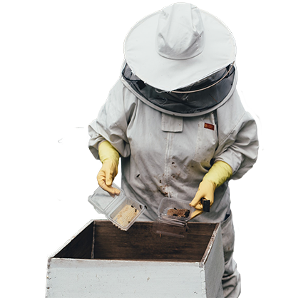

Globally there are more honey bees than other types of bee and pollinating insects, so it is the world’s most important pollinator of food crops. It is estimated that one third of the food that we consume each day relies on pollination mainly by bees, but also by other insects, birds and bats.

In 2018, the Bee Keepers Association estimates that honey bees make a
significant contribution to the $16 billion annually generated for the
US economy through pollination by insects, with the figure put at $20
billion in 2019 by the US’s Public Accounts Committee. Many flowering
food crops in the US rely on honey bees for this service, for example:
apples, pears, field beans, runner and dwarf beans, broad beans.
The bumble bee is also used commercially in the UK as a pollinator of
food crops, in particular for tomatoes and soft fruits such as
strawberries. Due to their size, shape and ability to vibrate vigorously
they are more effective at pollinating certain crops. In the US we have
25 native species of bumble bee. This may seem like a healthy number but
unfortunately three species are already extinct, two are critically
endangered and many more are seriously declining in numbers